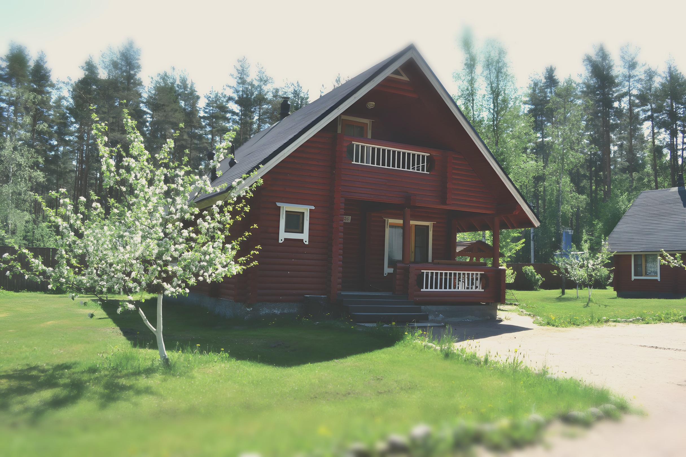

Green Village
комплекс коттеджей
Коттеджи
Баня
Бассейн
Рыбалка
Контакты
+7 901 315-07-98
Забронировать
Коттеджи · Приозерский район, 76 км Новоприозерского шоссе
Коттеджи
в сосновом лесу
Выбрать даты
25 гектаров леса, свой пляж и баня